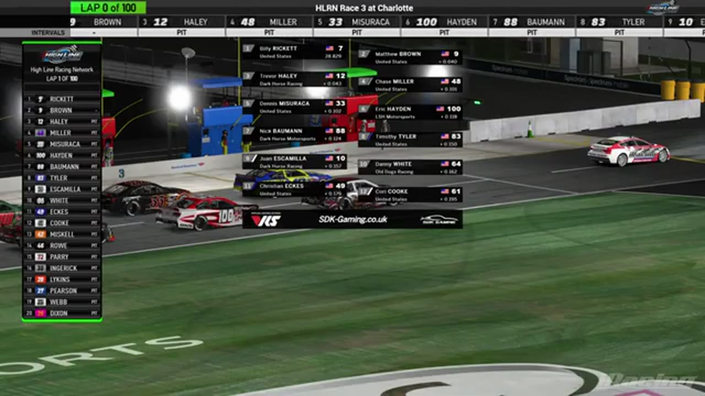

Dennis Misuraca
Team assignment not stated in the structured owner record.
A PODIUM FILE WITH AN OPEN RESULT HORIZON
- Official files
- 1
- Central editions
- 0
- Exact tape cues
- 1
- Accepted podiums
- 1
Dennis Misuraca has 1 position-specific top-three receipt: S1 R3 at Charlotte (P2). No feature win is currently supported in the accepted result ledger. A consistently stated team affiliation remains open for owner review. The currently indexed source date is December 1, 2025.
The official tape index connects the name to 1 race file, 0 Central editions, and 1 primary-broadcast navigation cue. The densest direct-tape categories are result (1 cue). Those counts describe where the name is easiest to find; they are not fault, pace, or performance grades. A source-attributed car frame is published with its original video and timestamp. That is the current discovery map for Dennis Misuraca.
That is enough for a real result dossier without pretending the archive knows every start or finish. Owner classifications can extend the record later through the same stable race IDs. No Highline Live bonus file is currently attached to this identity. The displayed name is labeled broadcast graphic confirmed; that status remains visible so an owner roster can strengthen or correct the identity without rewriting the evidence trail. Those boundaries define Dennis Misuraca's public HLRN file.
1 featured race-tape cues
These are discovery routes into complete HLRN broadcasts, not performance grades or inferred results.
Verified team history is not consistently stated. Complete starts, finishes, and points remain open beyond the recovered results. The public spelling has broadcast identity support; an owner roster can still add legal-name, number, and team-history detail.